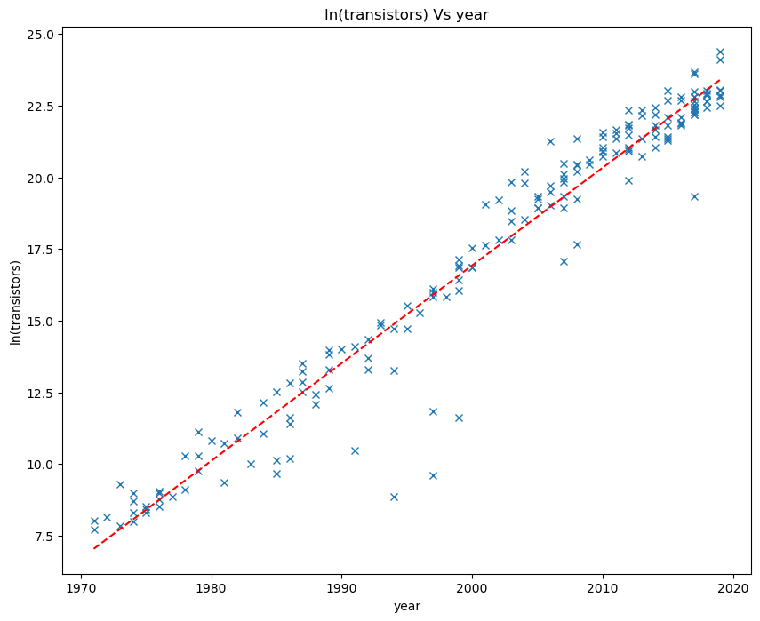

Non-linear least squeares inversion
An example of why non-linear inversion is needed
We have seen in the previous sections how to perform linear inversion and even how to linearize a problem to solve it in the framework that we set up for the linear case. But in some cases we won't be able to solve our problem in a linear manner. We'll highlight this by introducing a real world problem that can't be linearized.
The problem we will look at involves infra-red spectrometry data from massive young stellar objects (MYSOs). These objects are young stars that are still forming and gaining mass from accretion disks that deposit material on the star. As part of this process, jets of material are expelled at the poles of the MYSOs. By looking at absorption spectra from these MYSOs of certain transition of hydrogen with kmnown frequencies then we can approximate how much mass is being ejected from these poles and gain a slight understanding of whether the pole is oreinatated towards or away from us. The width and depth of the absorption spectra give an understanding of the mass loss rate as a larger cone will have a wider range of incendence anlges with the Earth and hence a wider spectrum (as some is blue shifted and some is red-shifted due to the velocity of material relative to the Earth) and a depper absorption line is a indicative of a higher density of material. So what do these spectra look like?

Given this it makes sense to try to fit Gaussian curves to the absoprtion spectra to give an estimate of the width (the standard deviation of the Gaussian) and the depth (the amplitude of the Gaussian). The centre point of the Gaussian can also tell us whether the absorption line as a wholeis red- or blue-shifted to give us some information about the speed of the MYSO relative to the Earth. So what would be the form of the Gaussian we want to fit? First note that the absorption spectra could be modelled not by Gaussians but by "negative" Gaussians with a baseline at 1 (i.e. just add 1 to the distribution). It is also apparent that the absorption spectra could have multiple different components which can be attributed to distinct ejection events or periods, but we'll only focus on fitting a single Gaussian here. The form of the model representing the absorption spectra (or at least one Gaussian component of it) is:
$$ \LARGE{y = 1 - A e^{\frac{-(x-\bar{x})^{2}}{2\sigma^{2}}} }$$
where $in A $in is the amplitude of the Gaussian, $in \bar{x}$in is the location of the mean of the
Gaussian, and $in\sigma$in is the standard deviation of the Guassian.
It is clear to see that is
isn't really possible to linearly separate the three model variables from the measurement axis, $in x$in, in
this equation. So if we can't solve this problem as a linear least squares problem then one solution is to
solve it as a non-linear least squares problem.
Non-linear least squares derivation
In linear least squares we have our problem in the form $in d = Gm $in because we can linearly separate the model variables from the physics encapsulated in the data kernel, $in G$in. However, in the case presented above we can't linearly separate the model variables so our problem can only be formulated as:
d=G(m)
Here the data kernel is a functino fo the model variables as we cannot separate the two. In non-linear least squares we don't attempt to directly solve this equation for the modle variables as was done before in the linear case. Instead we start with a guess of the model parameters and attempt to update these model variables using the misfit between the expected values using these model variables and the recorded values. How to define this update and traverse this misfit space is an entire subject in itself, optimization, that we will cover separately. Here we will derive and implement a basic optimization called gradient descent.
PAGE UNDER CONSTRUCTION!
$$m_{k+1} = m_{k} - (J_{k}^{T} J_{k})^{-1} J_{k}^{T} r_{k} $$
where
$$ J = \frac{\partial g}{\partial m}\big\rvert_{m_{0}} $$
Solving our Gaussian fitting problem with non-linear least squares inversion
Now we have a framework for solving problems in non-linear least squares inversion we'll use it to solve our original problem of fitting Gaussian curves to infrared spectrometry data. The function we want to fit is
$$ \LARGE{y = 1 - A e^{\frac{-(x-\bar{x})^{2}}{2\sigma^{2}}} }$$
We now have to form the Jacobian matrix, $in J$in, via taking the partial derivative of the equation for the target variable with respect to each model parameter.
$\LARGE{\frac{\partial y}{\partial A} = -e^{\frac{-(x-\bar{x})^{2}}{2\sigma^{2}}}} $
$\LARGE{\frac{\partial y}{\partial \bar{x}} = -A\frac{(x-\bar{x})}{\sigma^{2}}e^{\frac{-(x-\bar{x})^{2}}{2\sigma^{2}}}} $
$\LARGE{\frac{\partial y}{\partial \sigma} = -A\frac{(x-\bar{x})^{2}}{\sigma^{3}}e^{\frac{-(x-\bar{x})^{2}}{2\sigma^{2}}}} $
print(model)